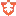
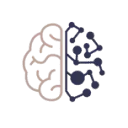

МолекулаАгрегаторы нейросетей
Молекула объединяет модели для текстов, изображений, видео и музыки. В одном аккаунте можно подобрать инструмент под этап работы, сохранить инструкции проекта и использовать готовые роли.
К задаче в МолекулеНейросети: Проверьте один рабочий запрос с вашими материалами. Сравните точность, контекст и возможность проверить результат.
Начните с одного конкретного результата: текста, изображения или разбора документа. Навигация Молекулы помогает найти нужный раздел; условия доступности функции проверьте в своём кабинете.
Мне нужен понятный ответ клиенту по условиям доставки из предоставленного документа. Помоги сформулировать задание модели и перечень проверок ответа. Недостающие условия оставь открытыми.

Молекула объединяет модели для текстов, изображений, видео и музыки. В одном аккаунте можно подобрать инструмент под этап работы, сохранить инструкции проекта и использовать готовые роли.
К задаче в Молекуле
Adobe Firefly объединяет генерацию и редактирование изображений, видео и других творческих материалов. Подходит для поиска визуального направления и дальнейшей доработки в редакторе.

Agent Zero позволяет запускать агента в собственном рабочем окружении. До выполнения задачи нужно определить доступные инструменты и ограничить область его действий.

Anyword рассчитан на задачи, где нужно готовить материалы о товарах и услугах. Ещё одно направление работы: редактировать уже написанный материал.

Arena AI предлагает сравнение модельных ответов с участием посетителей. Её собственные результаты голосования относятся к правилам этой площадки и не являются оценками НейроРейтинга.

В инструменте «Clarifai» можно исследовать тему и разбирать найденную информацию. Ещё одно направление работы: считывать текст с изображения.
GooseAI относится к инструментам, которые помогают готовить текст по теме и требованиям к содержанию. Ещё одно направление работы: подключать ИИ-инструменты к своему окружению.

Grok объединяет диалог, поиск по вебу и X, работу с материалами и создание контента. Для исследования полезно отдельно проверять найденные источники и собственные выводы модели.

Hugging Face хранит модели, наборы данных и приложения Spaces. Помогает изучать условия моделей, пробовать примеры и готовить собственное окружение для машинного обучения.

Kajiwoto относится к инструментам, которые помогают собирать видео с цифровым ведущим. Ещё одно направление работы: работать с заданным образом ИИ-персонажа.

Krea помогает разрабатывать визуальный материал с опорой на генерацию и редактирование. Подготовленный референс полезен, когда одного словесного задания недостаточно.

LibreChat используют для задачи: исследовать тему и разбирать найденную информацию. Ещё одно направление работы: готовить ответы на обращения клиентов.

Lingvist используют, чтобы подбирать настройки и инструкции для модели. Ещё одно направление работы: готовить учебный материал и объяснения.

Mira предлагает агентный способ выполнять задачи через Telegram. Перед работой нужно уточнить доступные действия и проверить, как передаются данные для выбранного сценария.

OpenCode рассчитан на задачи, где нужно писать и изменять программный код. Ещё одно направление работы: исследовать устройство программного проекта.

Shiken.ai рассчитан на задачи, где нужно готовить учебный материал и объяснения. Ещё одно направление работы: обрабатывать голосовые обращения.

Stockimg AI рассчитан на задачи, где нужно собирать видеосцену по описанию или визуальному исходнику. Ещё одно направление работы: готовить материалы о товарах и услугах.

Together AI предоставляет разработчику доступ к моделям и средствам их применения. Способ подключения выбирают под требуемый формат генерации и рабочую нагрузку.

Tutor AI относится к инструментам, которые помогают готовить учебный материал и объяснения. Ещё одно направление работы: готовить текст по теме и требованиям к содержанию.

В инструменте «Veo 3.1 (Google DeepMind)» можно собирать видеосцену по описанию или визуальному исходнику. Ещё одно направление работы: готовить видеоматериалы для публикации.

ГигаЧат помогает готовить тексты, обсуждать информацию и работать с заданиями на русском языке. Отдельный API позволяет подключать возможности модели к приложениям.

НейроЖук предлагает несколько направлений генерации: визуальный контент, звук и текстовые задачи. Перед началом полезно определить нужный результат и выбрать соответствующий режим.

Шедеврум создаёт изображения на основе описанной идеи. Нужные детали лучше задавать в запросе явно, а итоговые варианты сравнивать с первоначальной задумкой.

AgentGPT позволяет подготавливать собственных ИИ-агентов и задавать им имя и цель. В описании предусмотрено развёртывание и выполнение задач агентами. Пользователь связывает цель и выбранные задачи при подготовке сценария работы, задавая назначение помощника и рассматривая его последующее выполнение в рамках предоставленных инструментом возможностей.

ArtAny.ai используют для задачи: менять фотографии с учётом выбранного оформления. Ещё одно направление работы: получать изображения из словесного задания.

DeepSeek используют для разговорных задач, объяснения кода и подготовки программных решений. API позволяет встроить модель в приложение, управляя входными сообщениями и обработкой ответа.

Fireworks AI используют, чтобы исследовать тему и разбирать найденную информацию. Ещё одно направление работы: готовить ответы на обращения клиентов.

Glean используют, чтобы исследовать тему и разбирать найденную информацию. Ещё одно направление работы: обрабатывать голосовые обращения.

Gemini помогает обсуждать тексты, искать сведения и работать с визуальными материалами. В приложении есть исследовательские и творческие режимы; доступ в продуктах Google проверяется отдельно.

Huru.ai относится к инструментам, которые помогают собирать видеосцену по описанию или визуальному исходнику. Ещё одно направление работы: собирать видео с цифровым ведущим.

neural.love рассчитан на задачи, где нужно получать изображения из словесного задания. Ещё одно направление работы: менять фотографии с учётом выбранного оформления.

Recraft создаёт растровую и векторную графику, помогает редактировать изображения и выдерживать выбранный стиль. Полезен для иконок, иллюстраций и рекламных макетов.

Rytr предлагает подготовку черновиков под заданный тип текста. Краткий бриф помогает получить материал, который затем можно редактировать под адресата.

Scenario предлагает генеративную работу с материалами для визуального проекта. Полученные элементы нужно проверять на совместимость с остальным содержанием и средствами разработки.

В инструменте «ScholarAI» можно готовить текст по теме и требованиям к содержанию. Ещё одно направление работы: сокращать материал до основных положений.

TheMindReader.ai используют для задачи: настраивать разговор с заданным персонажем. Ещё одно направление работы: подготавливать озвучку текстового материала.

В инструменте «Verbatik» можно готовить музыкальную композицию по заданию. Ещё одно направление работы: собирать видеосцену по описанию или визуальному исходнику.

Workik AI рассчитан на задачи, где нужно связывать действия в автоматизированный процесс. Ещё одно направление работы: исследовать тему и разбирать найденную информацию.

Нейросетка | Sora2 | Nano Banana относится к инструментам, которые помогают собирать видеосцену по описанию или визуальному исходнику. Ещё одно направление работы: получать изображения из словесного задания.

В инструменте «AIaDventures» можно готовить учебный материал и объяснения.

AirOps рассчитан на задачи, где нужно исследовать тему и разбирать найденную информацию. Ещё одно направление работы: сокращать материал до основных положений.

APOB.AI позволяет использовать созданный образ персонажа в последующих визуальных генерациях. Такой подход полезен, когда в разных материалах нужно удерживать узнаваемую внешность.

Bloom AI используют, чтобы разбирать содержимое документов. Ещё одно направление работы: готовить учебный материал и объяснения.

Centripe рассчитан на задачи, где нужно связывать действия в автоматизированный процесс. Ещё одно направление работы: готовить ответы на обращения клиентов.

В инструменте «FastBots.ai» можно создавать основу сайта или приложения. Ещё одно направление работы: готовить ответы на обращения клиентов.
FLUX.1 создаёт изображения из текстовых описаний. Семейство Black Forest Labs доступно через разные способы запуска, условия которых зависят от выбранного варианта модели.

Futurepedia относится к инструментам, которые помогают исследовать тему и разбирать найденную информацию. Ещё одно направление работы: использовать разные модели через общее рабочее пространство.

Hotpot.ai объединяет графические инструменты и подготовку контента с участием ИИ. Среди возможностей есть удаление фона и восстановление снимков, а также шаблоны макетов. Создание публикаций для соцсетей и доступ через API дополняют работу над визуальными материалами пользователя.
Страница 1 из 4